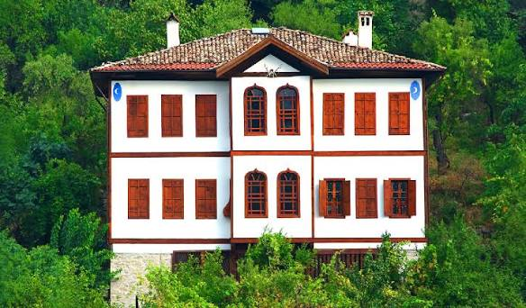
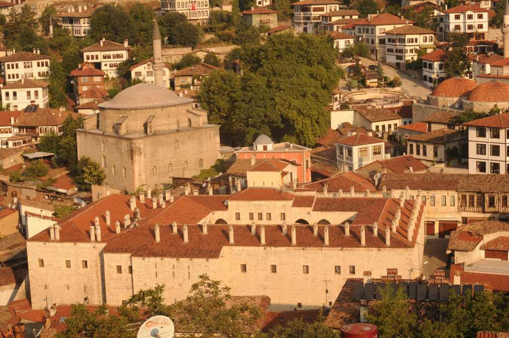

Safranbolu'da Gezilecek Yerler
1. Tarihi Safranbolu Evleri

Geleneksel Türk sivil mimarisinin önemli örneklerinden olan Safranbolu evleri, ahşap ve taş kullanımıyla dikkat çekmektedir.
2. Cinci Hanı

17. yüzyılda inşa edilen Cinci Hanı, Safranbolu'nun tarihi ticaret yapılarından biridir.
3. Hıdırlık Tepesi
Safranbolu'nun tarihi yerleşimini panoramik olarak izleyebileceğiniz önemli seyir noktalarındandır.
4. Kaymakamlar Gezi Evi
Safranbolu'nun kültürel mirasını yansıtan bu yapı, ziyaretçilere geçmişin izlerini sunmaktadır.